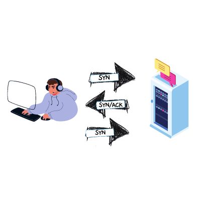
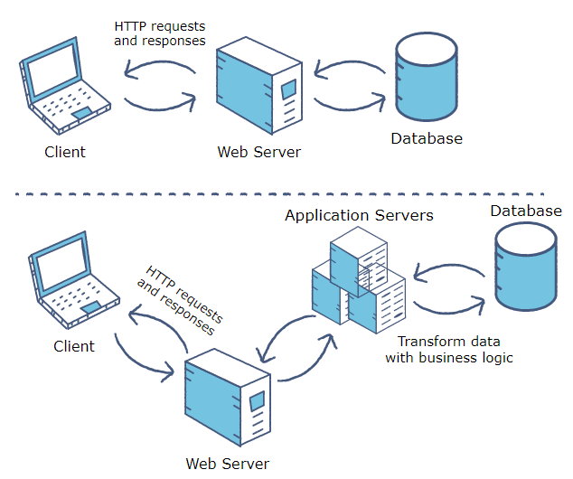
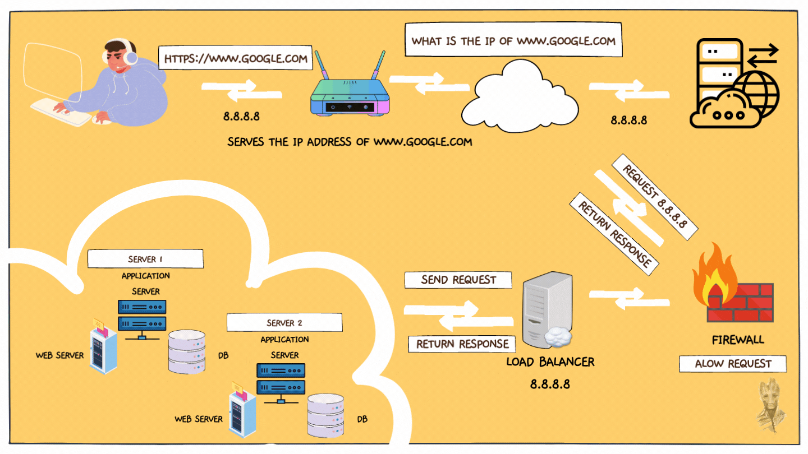

To answer this question, I will proceed to break down the URL; https://www.google.com.
- https:// is a scheme, it is a Secure Hypertext Transfer Protocol.
- www is a subdomain to google.com domain, it works like an identifier or an address to the website that points to a specific server IP address serving the website.
When you type "https://www.google.com" into your browser's address bar and hit Enter, you kick off a fascinating sequence of events that make the internet seem like magic. Let's delve into the intricate process that takes place behind the scenes, involving DNS requests, TCP/IP, firewalls, HTTPS/SSL, load balancers, web servers, application servers, and databases.
DNS Request:
When a user types in the URL and presses enter, the journey begins with a Domain Name System (DNS) request, your browser first needs to figure out or resolves the IP address that the computer understands of the server hosting the website. It does this by performing a DNS query (also known as DNS request) where the user's computer (DNS client) asks for the IP address associated with the domain name from a DNS server (a computer server that contains a database of public IP addresses and their associated hostnames).

TCP/IP:
Once the IP address is obtained, a Transmission Control Protocol/Internet Protocol (TCP/IP) connection is established. This communication protocol ensures reliable and ordered delivery of data between your computer and Google's servers.
Firewall:
Before your request reaches Google's servers, it encounters firewalls, which act as gatekeepers. Firewalls monitor and control incoming and outgoing network traffic, ensuring that only authorized data passes through. This security layer protects against unauthorized access and potential threats.
HTTPS/SSL:
The data exchange between your browser and Google is secured through the use of HTTPS (Hypertext Transfer Protocol Secure) and SSL (Secure Sockets Layer) encryption. This encryption safeguards the information exchanged from eavesdroppers and ensures the integrity and authenticity of the communication.
Load Balancer:
Large-scale websites like Google often use load balancers to distribute incoming network traffic across multiple servers. This ensures optimal resource utilization, prevents server overload, and enhances the website's performance. Load balancers contribute to a seamless user experience by efficiently managing the incoming requests.
Web Server:
Upon passing through the load balancer, your request reaches a web server. Web servers, like Apache or Nginx, handle incoming requests, process them, nd generate responses. In Google's case, the web server might return the search page you requested.

Application Server:
For more dynamic content or services, the web server may communicate with an application server. Application servers, such as those running Java or PHP, execute specific tasks or processes requested by the user. In Google's scenario, this could involve complex search algorithms or personalized content generation.
Database:
For data retrieval and storage, the application server may interact with a database. Google's vast databases store indexed information, and queries from the application server retrieve the relevant data to fulfill your search request.
Below is a pictorial description of what happens when you type url browser and press enter
